1. 2018年中非合作论坛 _____ 峰会将于9月举行。
- A青岛
- B上海
- C北京
- D海口
2. 中非合作论坛正式成立于 _____ 年。
- A2018
- B2009
- C2005
- D2000
3. 中非合作论坛的成员包括中国、与中国建交的53个非洲国家以及_____。
- A非洲联盟委员会
- B欧盟委员会
- C国际奥林匹克委员会
- D联合国教育、科学及文化组织
4. 新中国成立后， _____ 是第一个与新中国建交的非洲国家。
- A加纳
- B马里
- C贝宁
- D埃及
5. _____ 是唯一将中国春节列为法定节日的非洲国家。
- A尼日利亚
- B毛里求斯
- C博茨瓦纳
- D喀麦隆
6. 2018年是中国和南非建交 _____ 周年。
- A10
- B20
- C30
- D40
7. _____ 是第一个同中国签署“一带一路”合作文件的西非国家。
- A摩洛哥
- B肯尼亚
- C塞内加尔
- D乍得
8. 2018年是中国向几内亚派遣医疗队 _____ 周年。
- A50
- B40
- C30
- D20
9. _____ 是非洲联盟通过的一份有关非洲未来发展的长远规划，其目标是在50年内建成地区一体化与和平繁荣的新非洲。
- A《千年目标》
- B《数字化议程》
- C《2030年可持续发展议程》
- D《2063年议程》
10. _____ 是非洲第一条中国标准跨国电气化铁路，被誉为“新时期的坦赞铁路”。这是一条友谊之路、合作之路，也是发展之路、繁荣之路。
- A马达拉卡快线
- B蒙内铁路
- C本格拉铁路
- D亚吉铁路
我是第1个
为2018年中非合作论坛北京峰会点赞的人